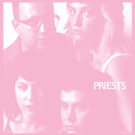

Quick Takes (January 2017)
And here we are! Now on our second year, Carl and I couldn't be happier to provide a monthly roundup of what we missed during the past month.
It was a fairly easy one for both us, seeing as there wasn't a large of notable albums that came out during the month of January. Besides me listening to the latest Grandaddy over and over (hint hint), I was very impressed with Sinai Vessel's smart and poignant Brokenlegged. Same goes for Sun Airway's surprise return, a duo I've written extensively about on this website. Carl, on the other hand, championed Ty Segall's solid streak (I couldn't agree with him more). As for this month's stinkers, I couldn't tolerate most of Migos' painfully stuffed Culture; Carl was mostly bored with Foxygen's bloatedly elegant return.
What were your favorite albums during the month of January? Anything we didn't get to review on our site that we should've? You can always reach us on facebook, or on our official twitter page. - Juan
...
Bonobo
Migration
(Ninja Tune)
Simon Green’s experiential body of work as Bonobo is one of the more accomplished electronic collections around. Upon each release, an informed shift of focus and measure has always seemed organic, and Migration continues this trend, with its nascence motif appearing as the natural progression from the dancefloor sensibility of The North Borders. Green’s ability to create lapsing soundscapes of immense richness is displayed as proficiently as we’ve come to expect, with the self-titled opening track evolving into the musical epitome of a spring bloom, anchored by a blossoming piano snip that invites an array of samples and other moving parts to flourish from it. Outlier is peak Bonobo, shrouding the listener in a vivid soundscape that grows to a colossus. Kerala evokes an immediate likeness to Ketto – a standout from 2006’s Days To Come – and is a stunning display of digital manipulation and mixing. Migration is a sparkling, crisp display of Green’s ability to completely immerse a listener, and it’s strong as it’s ever been. [7/10] Carl Purvis
Foxygen
Hang
(Jagjaguwar)
Sam France and Jonathan Rado have achieved something pretty impressive with Hang: they’ve produced a record that can be admired hugely, but is almost impossible to enjoy. In contrast to 2014’s 24 track drag ...And Star Power, Hang is barely half an hour long, but makes up for its lack of temporal bulk by making use of a 40 piece band, hyperbolically glorifying Bowie at his most glam, and allowing theatrical tangents and pastiches to blossom into the bizarre. France and Rado undoubtedly bring a musical star power to most that they touch, but they are a duo so volatile that break-up announcements must be taken with a pinch of salt, just as much as each shred of activity could be their last. With their most recent exploit, Hang appears as an album of ambition that outdoes itself so spectacularly that it appears as a jazzed up, Disney-esque caricature of its own end product. [5/10] Carl Purvis
 Frank Carter and the Rattlesnakes
Frank Carter and the Rattlesnakes
Modern Ruin
(International Death Cult)
Frank Carter is back with his Rattlesnakes for a second LP, and it’s a half hour scourge of abrasive pop-punk, propulsively led by furious, agitated guitar riffs and Carter’s caustic howl. Carter was a cult figure as the outrageously enigmatic frontman with Gallows before their 2011 split, and maintains a horde of followers from those days, in addition to those picked up during his time fronting the poppier tones of Pure Love. If they’re after a brutish catharsis, they’ll be feasting on this record, but the almost mellifluous production of the record deodorises the stink that should accompany the piss-soaked, serrated guitars, ultimately sanding down a product that should rip all in its path to pieces. Carter’s default psyche is an afflicted one, and his lyrics commenting on the migrant crisis typically don't pull any punches. On the other hand, his first steps into a more ornate sound on Neon Rust is a welcome change. [6/10] Carl Purvis
 Half Japanese
Half Japanese
Hear the Lion’s Roar
(Fire)
For the past 35 plus years, art punk careerists Half Japanese have proven that foolish ambition can actually offset studious skill. It sure hasn’t stopped them after a string of remarkably peculiar albums that gave a certain consistency to minimal, fractured pop. But in the past few years, the Jad Fair-led project has shifted toward writing songs that actually have focus and melody even if the campy lyrical content hasn’t really changed. Their sixteenth release, Hear the Lion’s Roar, sees aging as an arbitrary concept, where it’s perfectly okay to just have fun with a pure, childlike imagination. Fair repeatedly cries “It’s our time” throughout the album with a playfulness that, frankly, doesn’t always make sense, but he addresses these fragmented motivated maxims with an empowering tone that’s hard to contest. Hear the Lion’s Roar is filled with positivity and joy, and though sometimes the silliness buries some genuinely tuneful compositions, it’s yet another worthy escape that preserves Fair’s endearingly idyllic fancy. [7/10] Juan Edgardo Rodríguez
 Menace Beach
Menace Beach
Lemon Memory
(Memphis Industries)
Menace Beach’s second LP sees them expand their horizons from the heady, fuzzed-out college grunge of 2015 debut Ratworld. Lemon Memory (which incidentally gets its name from the idea of a ‘lemon curse’ – a curse designed to bring destruction to someone that has done you wrong, and something that Liza Violet and Ryan Needham believe was placed on their house) mirrors its title in the shape of a woozy psyche that entrenches itself in the album’s sound throughout. Opening track Give Blood stop-starts before Needham repeats the lyric "Why do you always sing about death?" over a gritty, inebriating riff. The excellent Suck It Out is powered by a motorik generator-like bassline, whilst Can’t Get a Haircut injects a shot of blues-stomp into a psychedelic warp panel. It’s undoubtedly a leap forward from the invigorating Ratworld, but while the range of tangents explored makes it a more interesting album, its lack of incisiveness prevents Lemon Memory from being called a better record. [6/10] Carl Purvis
Migos
Culture
(300 Entertainment)
There’s something inherently quixotic about Atlanta’s Migos, a hip hop trio whose robotic flows and acrobatic vocal performances come across as unintentionally jocular. It’s not like they do themselves any favors with their low-key trap vibes, as they detail their fiercely materialistic lifestyle with a level of artifice that, though genuine, doesn’t always register. But to Migos’ credit, the front loaded Culture features what Migos do best: the minimal programming drums and distorted vocal pitch effects of Bad Boujee and T-Shirt do resonate, as they leave just the right amount of space for Quavo, Takeoff, and Offset to rap together like well-rehearsed synchronized swimmers. It’s impressive in small doses, but as Culture progresses you get a strong sense of deja vu, where each track upends the next with a petty familiarity that is just frustratingly repetitive. Trap is still very much a singles-oriented endeavor, after all. It’ll take some time to really weigh in on Migos’ mainstream relevance, especially once they fizzle out of the current musical zeitgeist, but never does Culture meet the lofty, “Saviors of Southern rap” expectations so grossly imputed to them. [4/10] Juan Edgardo Rodríguez
Priests
Nothing Feels Natural
(Sister Polygon Records)
D.C. punks Priests are boldly evolving in both message and sound on Nothing Feels Natural. It’s a dramatic step forward from their previous debut full-length, Bodies and Control and Money and Power, which both served as an apt entry point for the rabble-rousing diversions they continue to practice but with a broader canvas to paint on. Singer Katie Alice Greer lets her vocal prowess take command with great versatility, equally letting those vocal registers loose on the mutated surf pop of JJ, and other times playfully embracing sing speak new-wave tropes on No Big Bang. She’s a flexible vehicle for Priests’ rawboned, though sometimes undercooked, post-punk leanings, arranging angular guitar lines and speedy tempos to an album that hits with a sage urgency. Both cynical and biting, Nothing Feels Natural is a timely and involving call to arms that promises great things from Priests sooner rather than later. [7/10] Juan Edgardo Rodríguez
 Sinai Vessel
Sinai Vessel
Brokenlegged
(Tiny Engines)
Brokenlegged is an album that demands its painstaking detail and precision. It started as a modest endeavor for the North Carolina trio, subsequently going through various permutations before it was finalized. The investment is more than justified, since the final version is a gloriously lush and poignant offering that reflects on the confusion that stems from having been taught a sense of false religious zeal. It’s fascinating how frontman Caleb Cordes expounds upon these themes with such profundity, as he writes a series of poetic vignettes with a clearheaded delivery that never misses a beat, handled with such rich detail. As Cordes frees himself from his personal constraints, the more he makes us believe that he’ll ultimately persevere. The music’s great, too: multi-layered guitars and textured mid-tempo confections swiftly breeze by with nary a wasted moment, produced with a classic indie rock sound that’s both vast and intimate. It’s brooding melodic rock that embraces the melodramatic, though marked by an absence of pretensions, performed with an aplomb that comes close to achieving big-tent aspirations. [8/10] Juan Edgardo Rodríguez
 Sun Airway
Sun Airway
Heraldic Black Cherry
self-released
Things sure have changed a lot since we last heard of John Barthmus, the creative mastermind behind electronic project Sun Airway. It was a time when chillwave was currently going through its last legs, and though the Philadelphia producer’s joyful dreamscapes were somewhat removed from the genre’s main proponents it never stopped him from creating some of the most memorable songs of that time. Even if Sun Airway were strictly a duo, Barthmus always brought a full-bodied approach to his fractured audio explorations. It always felt like you were listening to a full band, though on their latest, Heraldic Black Cherry, Barthmus is fabricating a more intimate atmosphere; you get a clear sense that he’s creating for himself for the sheer pleasure of it. Artful pop songs and instrumental interludes collide together like cushioned bumper cars, laid out in an elegant sequence with rich color and detail. Barthmus tends to saturate these diaphanous compositions to the point where his presence feels sometimes absent, which can occasionally wander without taking up leadership. Still, the fact that Barthmus is fully committed to keeping Sun Airway alive even when the stakes feel much smaller, and without a hint of self-doubt, is a goodreason to rejoice. [7/10] Juan Edgardo Rodríguez
 Ty Segall
Ty Segall
Ty Segall
(Drag City)
If you’re not overtly familiar with Ty Segall’s presumably sleepless existence over the past decade, the second self-titled LP of his prolific solo career (Ty Segall mk. II is the Californian garage-rock auteur’s ninth record in as many years) is the perfect entry point into his work. Opener Break a Guitar leaves a sludgy trail from the blocks, with Segall’s amp doing its best impression of a Fu Manchu fat stack. Even the acoustic, master-exploding riff of Freedom maintains the desert-dried dust cloud that he is so adept at procuring, almost as if he’s built his garage in the heart of the Sierra Nevada in order to refine the best blend of stoner and garage rock in the most efficient way possible. Segall’s label Drag City described Orange Color Queen – an ode to his girlfriend - as a “supreme moment of tenderness”, and Take Care (To Comb Your Hair) further showcases his penchant for dressing up the gritty sludge with charming, delicate hooks and melodies when it feels prudent to do so. He’s is nothing short of a chameleon when it comes to garage rock, and this is one of his most impressive outputs yet. [8/10] Carl Purvis
...
13 February, 2017 - 04:53 — No Ripcord Staff